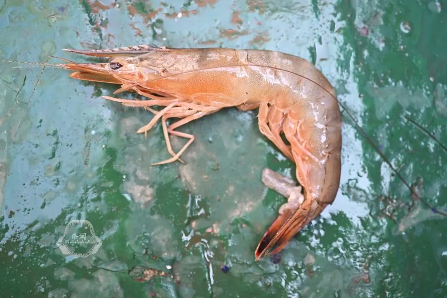

甲壳动物 · 动物界
中国对虾 Fenneropenaeus chinensis

中国黄渤海重要的经济虾类，体形修长的大型虾类，曾是中国海水养殖的支柱品种，野生资源受过度捕捞影响。
- 分类
- 门节肢动物门纲软甲纲目十足目科对虾科属明对虾属
- 栖息环境
- 黄海、渤海沿岸的浅海与河口，冬季洄游至深水越冬
- 地理分布
- 中国黄海、渤海及朝鲜半岛西部沿岸
- 保护级别
- 暂无评估；野生资源受过度捕捞影响
物种志
中国对虾体长可达 18–24 cm，雌虾明显大于雄虾，体色浅黄褐至灰绿色，体表散布淡褐色小点，额剑细长，步足浅黄色，尾扇略带红色，是对虾科中体型较大的种类。
它生活在黄海、渤海沿岸的浅海和河口，秋季在近岸产卵，幼虾在河口和浅滩生长，冬季向外海深水区越冬洄游，一年完成一个世代。中国对虾是中国海水养殖的支柱品种之一，20 世纪 80 年代曾创下高产纪录，后因病害和种质退化产量下降，现以养殖和增殖放流恢复资源。野生种群受过度捕捞、河口污染和栖息地破坏影响，需要加强种质保护和放流管理。目前野生群体已难以形成大规模渔汛，资源恢复仍需时间。
形态与习性
- 食性杂食，取食底栖动物、有机碎屑和藻类
- 体长约 18–24 cm，雌虾大于雄虾
- 洄游秋季近岸产卵，冬季向深水越冬洄游
- 生活史一年完成一个世代，幼虾在河口生长
- 经济中国海水养殖的支柱品种之一
- 保护增殖放流是恢复野生资源的主要手段
趣味知识
- 中国对虾过去常按对出售，因此得名对虾。
- 雌虾比雄虾大，成体雌虾可长到 20 厘米以上。
- 每年秋季它们会游向近岸产卵，幼虾在河口浅滩长大。